musrfit User Manual
1 Introduction
musrfit is a software tool for analyzing time-differential μSR data. The program suite is free software and licensed under the GNU GPL version 2 or any later version (at your option). It is implemented in C++/ROOT and uses the MINUIT2 libraries developed at CERN for fitting data. Installation instructions for GNU/Linux, MS Windows, and Mac OS X can be found here. For people familiar with the μSR data analysis program WKM there is a short quick start page explaining the major differences between WKM and musrfit. Recent changes of the program are listed in the ChangeLog.
2 Available Executables, Configuration Files and their Basic Usage
2.1 musrfit
musrfit is the actual fitting program. It defines the FCN routine passed to MINUIT2 and performs χ2 or log-likelihood fitting.
If called from within a shell it accepts several parameters: - <msr_file>
- filename of the msr input file defining all the details needed for performing a fit to a specified set of data—the only mandatory parameter
- -k, --keep-mn2-output
- selects the option for keeping the output of
MINUIT2including the correlation coefficients between different parameters and renaming the filesMINUIT2.OUTPUTandMINUIT2.rootto<msr_file_without_extension>-mn2.outputand<msr_file_without_extension>-mn2.root, repectively, e.g. <msr_file> =8472.msr→8472-mn2.output,8472-mn2.root - -c, --chisq-only
- Instead of fitting the model,
musrfitcalculates χ2 or max. log-likelihood, maxLH, only once and sends the result to the standard output if called with this option. This is e.g. useful for the adjustment of the initial values of the fit parameters. - -t, --title-from-data-file
- If this option is given
musrfitwill replace the title in the <msr_file> by the run title in the data file of the first run appearing in a RUN block. In case there is no run title in the data file no substitution is done. - -e, --estimateN0
- estimate N0 for single histogram fits.
- -p, --per-run-block-chisq
- will write per run block chisq/maxLH into the msr-file.
- --dump <type>
- is writing a data file with the fit data and the theory; <type> can be ascii (data in columns) or root (data in
ROOThistograms) - --timeout <timeout_tag>
- overwrites the predefined timeout of 3600 sec. <timeout_tag><=0 means the timeout facility is not enabled. <timeout_tag> > 0, e.g.
nnwill set the timeout tonn(sec). If during a fit this timeout is reached,musrfitwill terminate. This is used to prevent orphan musrfit processes to jam the system. - --help
- displays a small help notice in the shell explaining the basic usage of the program
- --version
- prints the version number of
musrfit
musrfit 8472.msrthe fit described in the input file will be executed and the results will be written to a mlog output file—in the example
8472.mlog. When the fitting has terminated the msr file and the mlog file are swapped, so that the resultant parameter values can be found in the msr file and the mlog file contains a copy of the input file. The format of the mlog file is the same as that of the msr file. For a detailed description of the msr file format refer to the corresponding section.
Another example:
musrfit -c -e 8472_tf_histo.msrThis will calculate the chisq/maxLH of the run
8472 after estimating the N0.
2.2 musrview
musrview is an interactive graphical user interface for the presentation of the analyzed data and the corresponding fits. If called from within a shell it accepts the following parameters: - <msr_file>
- name of the msr input or output file to be displayed—this parameter is mandatory
- --help
- displays a small help notice in the shell explaining the basic usage of the program
- --version
- prints the version number of
musrview - -f, --fourier
- will directly present the Fourier transform of the <msr_file> with Fourier options as defined in the <msr_file>.
- -a, --avg
- will directly present the averaged data/Fourier of the <msr_file>.
- --<graphic_format_extension>
- will produce a graphics output file without starting a
ROOTsession. The filename is based on the name of the <msr_file>, e.g.8472.msr→8472_0.png
Supported values for <graphic_format_extension> are eps, pdf, gif, jpg, png, svg, xpm, root - --ascii
- will generate an ascii dump of the data and theory as plotted.
- --timeout <timeout>
- <timeout> given in seconds after which
musrviewterminates. If <timeout> <= 0, no timeout will take place. Default for <timeout> is 0.
musrview 8472.msr --jpgfor each PLOT block in the the msr file a file 8472_X.jpg is produced where X counts the PLOT blocks starting from zero. If called only with a msr file, e.g.
musrview 8472.msra
ROOT canvas is drawn; it contains all experimental data and fits specified in the PLOT block of the msr file.
For a description of the various plotting types refer to the corresponding section.
Example:
musrview 8472_tf_histo.msr -f -awill show the averaged Fourier transform of the data of run
8472.
Within the drawn canvas all standard actions applicable to ROOT canvases might be performed.
In the menu bar the Musrfit menu can be found. From there some musrfit-specific actions might be taken: - Fourier
- performs the Fourier transformation of the selected data and shows the result
- Difference
- shows the difference between the selected data and the fit
- Average
- toggle between the current view and the averaged data view. Useful if the averaged Fourier power spectrum of lots of detectors shall be shown.
- Export Data
- saves the selected data in a simple multi-column ASCII file
- q
- quits
musrview - d
- shows the difference between the selected data and the fit
- f
- performs the Fourier transformation of the selected data and shows the result
- a
- show the average of the presented data, e.g. the averaged Fourier power spectra of various detectors.
- u
- reset the plotting range to the area given in the msr file ("unzoom")
- c
- toggles between normal and crosshair cursor
2.3 musrFT
musrFT is an interactive graphical user interface for the presentation of Fourier transforms of raw μSR histograms. It's purpose is to get a quick overview for high TF-field data, as found e.g. at the HAL-9500 instrument at PSI. It Fourier transforms the raw histogram data, i.e. N(t) rather than A(t), and hence shows the lifetime contribution of the muon. This is no problem for large enough fields, but will be a severe problem at very low fields. musrFT is still in its early stage and should be considered a beta-version.
If called from within a shell it accepts the following parameters: - <msr_files>
- msr-file name(s). These msr-files are used for the Fourier transform. It can be a list of msr-files, e.g.
musrFT 3110.msr 3111.msr - -df, --data-file <data-file>
- This allows to feed only μSR data file(s) to perform the Fourier transform. Since the extended <msr-file> information are missing, they will need to be provided by to options, or
musrFTtries to guess, based onmusrfit_startup.xmlsettings. - --help
- display a help and exit
- --version
- output version information and exit
- -g, --graphic-format <graphic-format-extension>
- will produce a graphic-output-file without starting a root session. The name is based either on the <msr-file> or the <data-file>, e.g. 3310.msr -> 3310_0.png. Supported graphic-format-extension: eps, pdf, gif, jpg, png, svg, xpm, root
- --dump <fln>
- rather than starting a root session and showing Fourier graphs of the data, it will output the Fourier data in an ascii file <fln>.
- -br, --background-range <start> <end>
- background interval used to estimate the background to be subtracted before the Fourier transform. <start>, <end> to be given in bins.
- -bg, --background
- gives the background explicit for each histogram.
- -fo, --fourier-option <fopt>
- <fopt> can be 'real', 'imag', 'real+imag', 'power', or 'phase'. If this is not defined (neither on the command line nor in the
musrfit_startup.xml). Default will be 'power'. - -ap, --apodization <val>
- <val> can be either 'none', 'weak', 'medium', 'strong'. Default will be 'none'.
- -fp, --fourier-power <N>
- <N> being the Fourier power, i.e. 2^<N> used for zero padding. Default is -1, i.e. no zero padding will be performed.
- -u, --units <units>
- <units> is used to define the x-axis of the Fourier transform. One may choose between the fields (Gauss) or (Tesla), the frequency (MHz), and the angular-frequency domain (Mc/s). Default will be 'MHz'.
- -ph, --phase <val>
- defines the initial phase <val>. This only is of concern for 'real', 'imag', and 'real+imag'. Default will be 0.0.
- -fr, --fourier-range <start> <end>
- Fourier range. <start>, <end> are interpreted in the units given. Default will be -1.0 for both which means, take the full Fourier range.
- -tr, --time-range <start> <end>
- time domain range to be used for Fourier transform. <start>, <end> are to be given in (μsec). If nothing is given, the full time range found in the data file(s) will be used.
- --histo <list>
- give the <list> of histograms to be used for the Fourier transform. E.g.
musrFT -df lem15_his_01234.root --histo 1 3, will only be needed together with the option--data-file. If multiple data file are given, <list> will apply to all data-files given. If--histois not given, all histos of a data file will be used. <list> can be anything like: 2 3 6, or 2-17, or 1-6 9, etc. - -a, --average
- show the average of all ALL Fourier transformed data.
- -ad, --average-per-data-set
- show the average of per data set Fourier transformed data.
- --t0 <list>
- A list of t0's can be provided. This in conjunction with
--data-fileand--fourier-optionreal allows to get the proper initial phase if t0's are known. If a single t0 for multiple histos is given, it is assume, that this t0 is common to all histos. Example:musrFT -df lem15_his_01234.root -fo real --t0 2750 --histo 1 3. - -pa, --packing <N>
- if <N> (an integer), the time domain data will first be packed/rebinned by <N>.
- --title <title>
- give a global title for the plot.
- --create-msr-file <fln>
- creates a msr-file based on the command line options provided. This will help on the way to a full fitting model.
- -lc, --lifetimecorrection <fudge>
- try to eliminate muon life time decay. Only makes sense for low transverse fields. <fudge> is a tweaking factor (scaling factor for the estimated t0) and should be kept around 1.0.
- --timeout <timeout>
- <timeout> given in seconds after which musrFT terminates. If <timeout> <= 0, no timeout will take place. Default <timeout> is 3600 sec.
- Example 1
-
musrFT -df tdc_hifi_2014_00153.mdu --title "MnSi" -tr 0 10 -fr 7.0 7.6 -u Tesla --histo 2-17 -a
will take time range from t=0..10μsec, will show the Fourier transform in units of Tesla from B=7.0..7.6 Tesla of the detectors 2-17. Rather than showing the 16 individual Fourier transforms, the average of all Fourier spectra will be shown. t0's will be guessed by the maximum of the time domain histogram (assuming a prompt peak). - Example 2
-
musrFT -df tdc_hifi_2014_00153.mdu -tr 0 10 -fr 7.0 7.6 -u Tesla --histo 2-17 --title "MnSi average, T=50K, B=7.5T" -a -g pdf
as Example 1 but rather than showing an interactive GUI, the output will be dumped into a pdf-file. The file name will betdc_hifi_2014_00153.pdf. - Example 3
-
musrFT -df tdc_hifi_2014_00153.mdu -tr 0 10 -fr 7.0 7.6 -u Tesla --histo 2-17 --title "MnSi average, T=50K, B=7.5T" -a --dump MnSi.dat
as Example 1 but rather than showing an interactive GUI, the output will be dumped into the ascii fileMnSi.dat.
ROOT canvases might be performed.
In the menu bar the MusrFT menu can be found. From there some musrFT-specific actions might be taken: - Fourier
- allows to switch between different Fourier transform representations 'Power', 'Real', ...
- Average
- toggle between the current view and the averaged data view.
- Average per Data Set
- toggle between the current view and the per data set average view.
- Export Data
- saves the selected data in a simple multi-column ASCII file
- q
- quits
musrFT - a
- toggle between average of the presented data and single Fourier histos, e.g. the averaged Fourier power spectra of various detectors.
- d
- toggle between average per data set and single Fourier histos, e.g. the averaged Fourier power spectra of various detectors for the different data sets given.
- u
- reset the plotting range to the area given in the msr-file or the form the command line ("unzoom")
- c
- toggles between normal and crosshair cursor
2.4 musrt0
musrt0 is a user interface for the determination of t0 and the time windows of data and background needed to be specified in the RUN blocks of the msr file. It can be operated either as an interactive program or in a non-interactive mode. In the non-interactive mode it accepts the following parameters: - <msr_file>
- name of an msr file
- -g, --getT0FromPromptPeak [<firstGoodBinOffset>]
- tries to estimate t0 from the prompt peak (maximum entry) in each histogram and writes the corresponding values to the t0 lines in the RUN blocks of the msr file. If an optional number <firstGoodBinOffset> is given, the lower limit of the data range will be set to t0 + <firstGoodBinOffset>.
- --timeout <timeout>
- <timeout> given in seconds after which
musrviewterminates. If <timeout> <= 0, no timeout will take place. Default for <timeout> is 0. - --help
- displays a small help notice in the shell explaining the basic usage of the program
- --version
- prints the version number of
musrt0
musrt0 is started if the program is called with a sole msr-file argument, e.g.
musrt0 8472.msrThen a
ROOT canvas depicting the histogram of the data set mentioned first in the RUN block is drawn in different colors: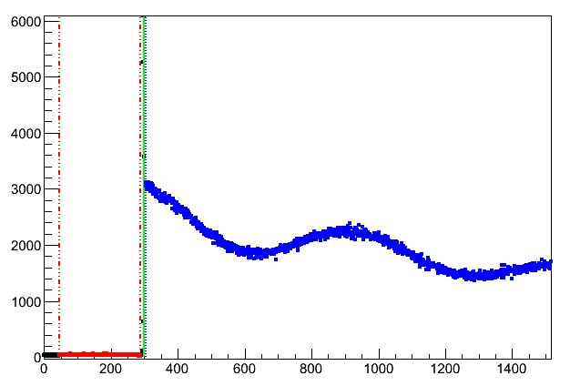
The colors of the data points represent the choice of the time windows of data (blue) and background (red), as well as t0 (green line). In order to change these ranges the mouse cross-hair is moved to a channel of choice and one of the following keys is pressed:
- q
- close the currently open histogram and opens the next (see also below)
- Q
- quit
musrt0without writing into the msr file - z
- zoom into the region about the t0
- u
- unzoom to the full range
- t
- set t0
- T
- automatically set t0, i.e. jump to the maximum of the histogram
- b
- set the lower limit of the background range
- B
- set the upper limit of the background range
- d
- set the lower limit of the data range
- D
- set the upper limit of the data range
musrt0 can be interrupted. No changes to the msr file are applied in this case.Closing a window by clicking the X button is equivalent to pressing Q, i.e.
musrt0 is simply terminated.
2.5 musrfit_startup.xml
musrfit_startup.xml is a configuration file located at the musrfit binary path. In this file the following XML tags are allowed to define settings: - <data_path>PATH_TO_DATA</data_path>
- add the new path PATH_TO_DATA where
musrfitandmusrviewwill search for data files - <write_per_run_block_chisq>y/n</write_per_run_block_chisq>
- if enabled χ2 for each RUN block will be written to the STATISTIC block of the resulting
msrfile. Additionally, in case a χ2 single-histogram fit is done, also Pearson's χ2 will be added. - <fourier_settings></fourier_settings>
- set the default parameters for the Fourier transform in
musrview. For further details refer to the description of the msr file.- <units>UNITS</units>
- specify the units of the frequency or field-domain. Valid units are Gauss, MHz and Mc/s (inside a <fourier_settings> environment)
- <fourier_power>n</fourier_power>
- specify the number of points 2n (n < 21) to be used for the Fourier transform (inside a <fourier_settings> environment)
- <apodization>APOD</apodization>
- set the default apodization method. Valid apodizations are none, weak, medium and strong (inside a <fourier_settings> environment)
- <plot>PLOT</plot>
- specify which part of the Fourier transform is plotted by default. You can choose between real, imag, real_and_imag, power and phase (inside a <fourier_settings> environment)
- <phase>PH</phase>
- set the initial phase shift PH (in degrees) of the data to be Fourier transformed (inside a <fourier_settings> environment)
- <phase_increment>PHINCR</phase_increment>
- change the default value of the phase increment (in degrees) used for the phase optimization to PHINCR (inside a <fourier_settings> environment)
- <root_settings></root_settings>
- change the default
ROOTsettings- <marker_list></marker_list>
- specify the order in which
musrviewshould use markers when plotting data (inside a <root_settings> environment)- <marker>X</marker>
- use the
ROOTmarker number X (inside a <marker_list> environment)
- <color_list></color_list>
- specify the order in which
musrviewshould use colors when plotting data (inside a <root_settings> environment)- <color>R,G,B</color>
- use the RGB coded color (inside a <color_list> environment)
<?xml version="1.0" encoding="UTF-8"?>
<musrfit xmlns="https://intranet.psi.ch/MUSR/MusrFit">
<data_path>/mnt/data/nemu/his</data_path>
<write_per_run_block_chisq>y</write_per_run_block_chisq>
<fourier_settings>
<units>Gauss</units>
<fourier_power>0</fourier_power>
<apodization>none</apodization>
<plot>real_and_imag</plot>
<phase>0.0</phase>
<phase_increment>1.0</phase_increment>
</fourier_settings>
<root_settings>
<marker_list>
<!-- Root marker numbers -->
<marker>24</marker>
<marker>25</marker>
<marker>26</marker>
<marker>27</marker>
</marker_list>
<color_list>
<!-- Color as RGB coded string -->
<color>0,0,0</color>
<color>255,0,0</color>
<color>0,255,0</color>
<color>0,0,255</color>
</color_list>
</root_settings>
</musrfit>
2.6 msr2msr
msr2msr is a small utility for converting existing WKM msr files into musrfit msr files. It accepts the following parameters: - <msr_file_in>
- input
WKMmsr file (mandatory first parameter) - <msr_file_out>
- converted output
musrfitmsr file (mandatory second parameter) - --help
- displays a small help notice in the shell explaining the basic usage of the program
msr2msr 8472-WKM.msr 8472-musrfit.msrIf the input file has already the
musrfit msr file structure, the output file will be just a copy of the input file.
2.7 any2many
any2many is a muSR data file converter. Currently different facilities (PSI, TRIUMF, ISIS, J-PARC) are saving their muSR data files in different formats, or even worse some instruments are using other muSR data formats than others. The aim of any2many is that these files can be converted into each other. Of course only a subset of header information can be converted.
Currently any2many can convert the following muSR data file formats: - input formats:
MusrRoot,PSI-BIN(PSI bulk),ROOT(PSI LEM),MUD(TRIUMF),NeXus IDF1andNeXus IDF2(ISIS), PSI-MDU (PSI bulk internal only),WKM(outdated ascii file format). - output formats:
MusrRoot,PSI-BIN,ROOT,MUD,NeXus1-HDF4,NeXus1-HDF5,NeXus1-XML,NeXus2-HDF4,NeXus2-HDF5,NeXus2-XML,WKM,ASCII
- -f <filenameList-input>
- where
<filenameList-input>is a space separated list of file names (not starting with a '-'), e.g.2010/lem10_his_0111.root 2010/lem10_his_0113.root. - -o <outputFileName>
- this option allows to given an output-file-name for the converted file. This option only makes sense if
<filenameList-input>is a single input-file-name! - -r <runList-input>
- where
<runList-input>is a list of run numbers separated by spaces of the form:<run1> <run2> <run3>etc., or a sequence of runs<runStart>-<runEnd>, e.g.111-123. This option cannot be combined with-fand vice versa. - -t <in-template> <out-template>
- where
<in-/out-template>are templates to generate real file names from run numbers. The following template tags can be used:[yy]for year, and[rrrr]for the run number. If the run number tag is used, the number of'r'will give the number of digits used with leading zeros, e.g.[rrrrrr]and run123will result in000123. Similarly[yyyy]will result in something like1999, whereas[yy]into something like99. For more details best check the examples below. - -c <in-Format> <out-Format>
- this is used to tell
any2manywhat is the input-file-format and into which output-file-format the data shall be converted. The possible input-/output-file-formats are listed above. - -h
- This option is for MusrRoot input files only! Select the the histo groups to be exported.
is a space separated list of the histo group, e.g. -h 0, 20 will try to export the histo 0 (NPP) and 20 (PPC). A histo-group is defined via the RedGreenoffset in theMusrRootfile format. It is used e.g. in red/green mode measurements. If this option is omitted in a conversion fromMusrRootto something, the first group will exported only! - -p <output-path>
- where
<output-path>is the output path for the converted files. If no<output-path>is given, the current directory will be used, unless the option-sis used. - -y <year>
- here a
<year>in the formyyoryyyycan be given. If this is the case, any automatic file name generation which needs a year will use this given one. - -s
- with this option the output data file will be sent to the stdout. It is intended to be used together with web applications.
- -rebin <n>
- where
<n>is the number of bins to be packed/rebinned. - -z [g|b] <compressed>
- where
<compressed>is the output file name (without extension) of the compressed data collection, and'g'will result in.tar.gz, and'b'in.tar.bz2files. - --help
- displays a help notice in the shell explaining the basic usage of the program.
- --version
- shows the current
SVNversion ofany2many.
'-t' is absent, the output file name will be generated according to the input data file name (not possible with <runList-input>), and the output data format.
Here now a couple of examples which should help to understand the switches.
any2many -f 2010/lem10_his_0123.root -c ROOT ASCII -rebin 25Will take the LEM ROOT file
'2010/lem10_his_0123.root' rebin it by 25 and convert it to ASCII. The output file name will be lem10_his_0123.ascii, and the file will be saved in the current directory. The data in lem10_his_0123.ascii are written in columns.
any2many -f 2010/lem10_his_0123.root -c ROOT NEXUS2-HDF5 -o 2010/lem10_his_0123_v2.nxsWill take the LEM ROOT file
'2010/lem10_his_0123.root' and convert it to NeXus IDF V2. The output file name will be lem10_his_0123_v2.nxs, and will be saved in the current directory.
any2many -r 123 137 -c PSI-BIN MUD -t d[yyyy]/deltat_tdc_gps_[rrrr].bin [rrrrrr].msr -y 2001Will take the run 123 and 137, will generate the input file names:
d2001/deltat_tdc_gps_0123.bin and d2001/deltat_tdc_gps_0137.bin, read these files, and convert them to the output files with names 000123.msr and 000137.msr, respectively.
any2many -r 100-117 -c PSI-MDU ASCII -t d[yyyy]/deltat_tdc_alc_[rrrr].mdu [rrr].ascii -y 2011 -sWill take the runs 100 through 117 and convert the
PSI-MDU input files to ASCII output and instead of saving them into a file, they will be spit to the standard output.
any2many -r 100-117 -c NEXUS ROOT -t d[yyyy]/psi_gps_[rrrr].NXS psi_[yyyy]_gps_[rrrr].root -z b psi_gps_run_100to117Will take the runs 100 through 117 and convert the
NeXus input files to ROOT output. Afterwards these new files will be collected in a compressed archive psi_gps_run_100to117.tar.bz2.
any2many -f 2010/lem10_his_0123.root 2010/lem10_his_0012.root -c ROOT ROOT -rebin 25Will read the two files
'2010/lem10_his_0123.root' and '2010/lem10_his_0012.root', rebin them with 25 and export them as LEM ROOT files with adding rebin25 to the name, e.g. 2010/lem10_his_0123_rebin25.root.
2.8 dump_header
dump_header is a little program which tries to read a μSR data file and sends the relevant information (required header info, start of the histos, etc.) to the standard output. Currently the following μSR data file formats are supported: MusrROOT, ROOT (old LEM format), PSI-BIN, PSI-MDU, NeXus (IDF1 and IDF2), MUD, and WKM.
- -rn, --runNo <runNo>
- run number of the header to be dumped.
- -fn, --fileName <fileName>
- muSR data file name.
- -ff, --fileFormat <fileFormat>
- where <fileFormat> is one of the above listed ones.
- -y, --year <year>
- <year> has to be a 4 digit value, e.g. 2005, if provided it is used to generate the file name for the given <runNo>, otherwise the current year is used. If a file name is given, this option has no effect.
- -s, --summary
- this option is used for LE-muSR data sets only. It will, additionally to the header information, print the summary file content.
- --psi-bulk <opt>
- where <opt> consists of two items: (i)
ptaortdc, (ii) the instrument name, i.e.gps,ltf,dolly,gpd, orhifi. This is needed in combination with the file formatsPSI-BINandPSI-MDUwhen providing a run number. - -h, --help
- will show a short help.
- -v, --version
- will print the current version.
dump_header -fn tdc_hifi_2015_00123.mdu -y 2015will dump the header information for the run
123 of the HAL-9500 instrument of the year 2015.
dump_header -rn 123 -ff PSI-MDU --psi-bulk tdc hifi -y 2015the same as the previous example, except that the file name is constructed via the number and the additionally provided information.
dump_header -rn 3456 -sWill dump the
LEM header information of run 3456 including the content of the run summary file.
3 Auxiliary Programs
Additionally to the programs mentioned above editor front ends calledmusrgui/musredit and another tool named msr2data are available. The purpose of msr2data is to process multiple msr files with the same parameters and to summarize the fitting results either in a DB or a column ASCII file. Also, new msr files can be generated from a template. For details refer to its manual.
Before going to use musrgui / musredit it is strongly recommended to read this manual first!
4 Description of the msr File Format
The programs are using an input file to control their action. This input file has the extension .msr (msr file). The msr file is built up from different blocks. Each block starts with a keyword and is—with the exception of the title—terminated by an empty line. Comments start with the character #. The various input blocks are described below.4.1 The Title
The first line of the msr file is the title line. Unlike all the other input blocks, it does not start with a block keyword. It is just a simple text line, in which any information can be placed. The title text will be used in the graphical representation of the data as a headline.4.2 The FITPARAMETER Block
The FITPARAMETER block is used to define the fit parameters in aMINUIT typical style. There
are various possible parameter definitions which are listed here:
1. <no> <name> <value> <step> 2. <no> <name> <value> <step> <lower_boundary> <upper_boundary> 3. <no> <name> <value> <step> <pos_error> <lower_boundary> <upper_boundary>where <no> is the parameter number, <name> is the parameter name (1), <value> is the initial guess of the parameter, <step> the inital step width, <lower/upper_boundary> is the lower/upper boundary for the parameter (2). In the output file, <value> will be the
MINUIT fit value, <step> will contain the error estimate (or the negative error estimate if MINOS was successfully used), <pos_error> will have the value none if MINOS has not been used, otherwise it will show the positive error estimate.
A typical example looks like this:
FITPARAMETER
# No Name Value Step Pos_Error Boundaries
1 alpha 1 0.02 none 0 1.8
2 asy 0.1042 0.004713 none 0 0.33
3 phase 15 1.0 none
4 freq 0.9 0.0379 none
5 rate 0.03 0.00579 none
There is also the possibility to constrain the parameters to semi-defined intervals (like par > a or par < b). The syntax is as follows:
FITPARAMETER
# No Name Value Step Pos_Error Boundaries
# Specify only a lower boundary for the parameter
1 Asy1 0.04501 -0.00208 0.00211 0 none
# Specify only an upper boundary for the parameter
2 Rate1 0.14245 -0.02501 0.02279 none 10
# Specify lower and upper boundaries for the parameter
3 Asy2 0.14501 -0.00208 0.00211 0 0.33
# Do not specify boundaries at all
4 Field2 343.212 -2.27960 2.27885
5 Rate2 0.42045 -0.02501 0.02279 none none
Notes
1: a standard string without whitespace
2: According to the MINUIT manual this should be avoided whenever possible!
4.3 The THEORY Block
The THEORY block is used to define the fit function. There is a set of predefined functions available. It is also possible to use externally defined functions. How to use them will be explained afterwards, here only the predefined functions are described.| name | abbreviation | parameters | mathematical expression | reference |
|---|---|---|---|---|
| const | c | 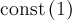 | ||
| asymmetry | a | 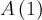 | ||
| simplExpo | se | 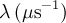 | 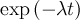 | |
| generExpo | ge | , 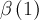 | ![\exp\left[-\left(\lambda t\right)^{\beta}\right]](../pub/MUSR/MusrFit/_MathModePlugin_8b46c96933bc8a754fde5aa613d0e806.png) |
|
| simpleGss | sg | 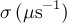 | 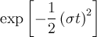 | |
| statGssKT | stg | 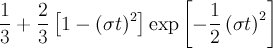 |  |
|
| statGssKTLF | sgktlf | 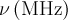, | 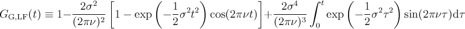 | (4) |
| dynGssKTLF | dgktlf | , , 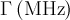 | (5) | |
| statExpKT | sekt | 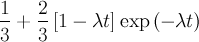 | (6) | |
| statExpKTLF | sektlf | , 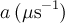 | 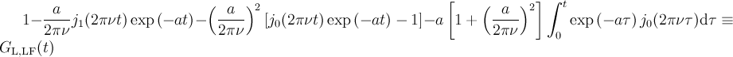 | (7) |
| dynExpKTLF | dektlf | , , | 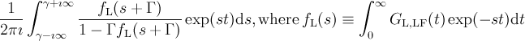 | (8) |
| combiLGKT | lgkt | , | 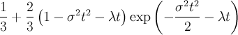 | |
| strKT | skt | , | 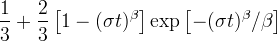 | (9) |
| spinGlass | spg | , 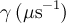, 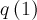 | 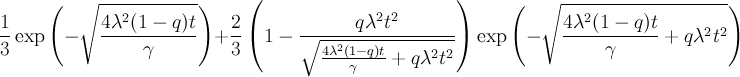 | |
| rdAnisoHf | rahf | , | 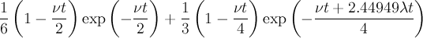 | (9) |
| TFieldCos | tf | 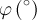, | 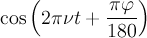 | |
| internFld | if | 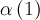, , , 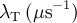, 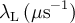 | 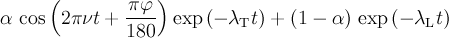 | |
| Bessel | b | , | 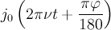 | |
| internBsl | ib | , , , , | 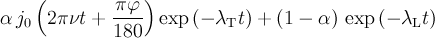 | |
| abragam | ab | , 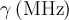 | 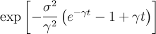 | |
| skewedGss | skg | , ,  , 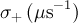 , 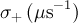 |
![\frac{\sigma_{-}}{\sigma_{+}+\sigma_{-}}\exp\left[-\frac{\sigma_{-}^2t^2}{2}\right]\left\lbrace\cos\left(2\pi\nu t+\frac{\pi\varphi}{180}\right)+\sin\left(2\pi\nu t+\frac{\pi\varphi}{180}\right)\mathrm{Erfi}\left(\frac{\sigma_{-}t}{\sqrt{2}}\right)\right\rbrace+ \frac{\sigma_{+}}{\sigma_{+}+\sigma_{-}}\exp\left[-\frac{\sigma_{+}^2t^2}{2}\right]\left\lbrace\cos\left(2\pi\nu t+\frac{\pi\varphi}{180}\right)-\sin\left(2\pi\nu t+\frac{\pi\varphi}{180}\right)\mathrm{Erfi}\left(\frac{\sigma_{+}t}{\sqrt{2}}\right)\right\rbrace](../pub/MUSR/MusrFit/_MathModePlugin_7f4cd42199fbf712ad5a86f9d94bd698.png) |
memo |
| staticNKZF | snkzf | 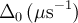, 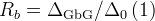 | 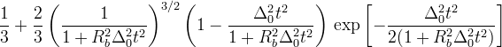 | (10) |
| staticNKTF | snktf | , , , | 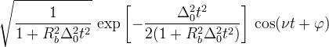 | see note 10 |
| dynamicNKZF | dnkzf | , , 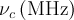 | 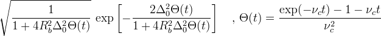 | see note 10 |
| dynamicNKTF | dnktf | , , , , | 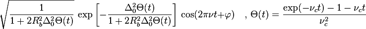 | see note 10 |
| muMinusExpTF | mmsetf | 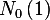, 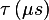, ,  , , , , |
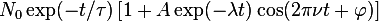 | (11) |
| polynom | p | 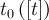, 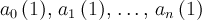 | 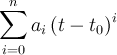 |
simplExpo 4defines an exponential function with a depolarization rate λ given by the parameter 4 of the FITPARAMETER-block. A full fetched THEORY block could be
THEORY asymmetry 2 simplExpo 3 TFieldCos 4 5 + asymmetry 6 simplExpo 7which means A(t) = p2 e-p3t cos(2π p5t + p4 π/180) + p6 e-p7t, where pα is the parameter α. Notes 4: R. S. Hayano et al., Phys. Rev. B 20 (1979) 850 5: R. S. Hayano et al., Phys. Rev. B 20 (1979) 850; P. Dalmas de Réotier and A. Yaouanc, J. Phys.: Condens. Matter 4 (1992) 4533; A. Keren, Phys. Rev. B 50 (1994) 10039 6,7: Y. J. Uemura et al., Phys. Rev. B 31 (1985) 546 8: R. S. Hayano et al., Phys. Rev. B 20 (1979) 850; P. Dalmas de Réotier and A. Yaouanc, J. Phys.: Condens. Matter 4 (1992) 4533 9: M.R. Crook and R. Cywinski, J. Phys.: Condens. Matter 9 (1997) 1149 9: R. E. Turner and D. R. Harshman, Phys. Rev. B 34 (1986) 4467 10: D.R. Noakes and G.M. Kalvius, Phys. Rev. B 56 (1997) 2352; A. Yaouanc and P. Dalmas de Réotier "Muon Spin Rotation, Relaxation, and Resonance" Oxford Scientific Publication; simplifying the original formulae by eliminating 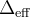 via the identity 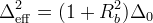 11: This function is explicit for 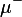! Do not try to use it for 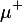.
4.3.1 Maps
In case different runs are fitted simultaneously, it is very often necessary that for a given theory function, some parameters are run-dependent. An example could be a temperature scan, where the parameters (asymmetry, depolarization rates, etc.) will depend on the temperature. In order to handle such situations, a mapping of parameters in the THEORY block is possible. That means, instead of a parameter number, the mapping of the parameter is given. The definition of the mapping block is part of the RUN block and will be described there. For exampleTHEORY asymmetry 2 simplExpo 3 TFieldCos 4 5 + asymmetry map1 simplExpo map2means that the first part of this theory function is common to all runs, as for instance the background, and the second part is changing from run to run, i.e.
map1/2 will point to different parameters depending on the run.
4.3.2 Functions
Yet another useful feature is the possibility to define functions in the FUNCTIONS block. Within the THEORY block these functions can be addressed asfunα, where α is the function number, e.g. fun2.
4.3.3 User Functions
In the case complicated and not predefined functions are needed to fit data,musrfit offers the possibility to implement external functions and introduce them to musrfit through the ROOT dictionary mechanism. The detailed rules these user-defined functions have to obey will be discussed in the according section. Here only the syntax for the msr file is provided.
To call a user function in the THEORY block the keyword userFcn is used. It is followed by the name of the shared library which holds the C++ class where the function is implemented and the name of the class. Finally, all parameters are given in the order needed by the class. Of course it is also possible to use mapped parameters or functions instead of specifying the parameters directly.
A THEORY block including a user function may then look like
THEORY asymmetry 1 userFcn libMyLibrary.so TMyFunction 2 3 4 map1 fun1 + ...
4.4 The FUNCTIONS Block
musrfit utilizes a powerful parser. Therefore, it is possible to define even rather complicated functional relations between the fit parameters and use these in the THEORY block (and in one exceptional case also in the RUN-block). Supported is the use of basic arithmetics: - +
- Addition
- -
- Subtraction
- *
- Multiplication
- /
- Division
- ()
- Parentheses
- gamma_mu = γμ/2π = 0.0135538817 MHz/G
- pi = π = 3.14159265358979323846
parα, where α is the number of the parameter in the FITPARAMETER block, e.g. par5 or through a mapping with mapδ, where δ specifies the mapping number in the RUN block as explained below.
The defined functions are denoted as funα, where α is the function number, i.e. fun1, fun2, etc. and have to be placed separately on one line each. Afterwards they might be used in the THEORY block.
It follows an example to illustrate the usage of functions in the THEORY block. The total asymmetry of a signal consisting of two parts should be a fit parameter. The fraction of each of the parts will then be expressed as a function of the total asymmetry.
FITPARAMETER
# No Name Value Step Pos_Error Boundaries
1 alpha 1 0.02 none 0 1.8
2 phase 15 1.0 none
3 asy 0.2542 0.004713 none 0 0.33
4 rate1 15 1.0 none 0 none
5 frac1 0.33 0.0379 none 0 1
6 rate2 0.13 0.00579 none 0 10
###############################################################
THEORY
asymmetry fun1
simplExpo 4 (rate)
+
asymmetry fun2
simplExpo 6 (rate)
###############################################################
FUNCTIONS
fun1 = par3 * par5
fun2 = par3 * ( 1.0 - par5 )
In the case that functions have to be fitted which cannot be defined in the FUNCTIONS block, the functions can be implemented externally and made usable through the userFunc mechanism.
4.5 The GLOBAL Block
The GLOBAL block is used to collect data which otherwise need to be specified in every single run entry of the RUN block. Therefore, this block is only present to potential shorten the msr-file and to ease the handling for the user. The logic will by like that:- check it the property is found in the RUN block.
- if not present in the RUN block, check whether it is present in the GLOBAL block
- if still not found, try the data file
- if still not found, either try to estimate it, or fire an error message
-
fittype -
data -
t0 -
addt0 -
fit -
rrf_freq(for fittype 1, 3) -
rrf_packing(for fittype 1, 3) -
rrf_phase(for fittype 1, 3) -
packing(for fittype 0, 2, 4)
single histo RRF fit and asymmetry RRF fit related entries (fittype 1 and 3 only) have the following syntax:
- rrf_freq
- Defines the RRF frequency. The exact syntax is
rrf_freq <value> <unit>where<value>is the value, and<unit>can beMHz,Mc, andT. An example:rrf_freq 7.2 T
- rrf_packing
- for fittype 1 and fittype 3 rather than giving
packing,rrf_packing <pack>has to be provided, e.g.rrf_packing 150
- rrf_phase
- an optional additional RRF phase can be provided (if not provided, the RRF phase will be 0.0). Syntax:
rrf_phase <phase>, where the value<phase>is given in degree. Example:rrf_phase 45
... ############################################################### GLOBAL fittype 0 (single histogram fit) fit 0.0005 10 packing 5 ############################################################### RUN data/tdc_hifi_2014_00153 PIE3 PSI PSI-MDU (name beamline institute data-file-format) map 5 6 7 0 0 0 0 0 0 0 0 norm 8 backgr.fit 9 forward 2 data 20120 409500 t0 20108.0 #-------------------------------------------------------------- RUN data/tdc_hifi_2014_00153 PIE3 PSI PSI-MDU (name beamline institute data-file-format) map 10 11 12 0 0 0 0 0 0 0 0 norm 13 backgr.fit 14 forward 3 data 20111 409500 t0 20088.0 #-------------------------------------------------------------- RUN data/tdc_hifi_2014_00153 PIE3 PSI PSI-MDU (name beamline institute data-file-format) ...Without GLOBAL block:
... ############################################################### RUN data/tdc_hifi_2014_00153 PIE3 PSI PSI-MDU (name beamline institute data-file-format) fittype 0 (single histogram fit) map 5 6 7 0 0 0 0 0 0 0 0 norm 8 backgr.fit 9 forward 2 data 20120 409500 t0 20108.0 fit 0.0005 10 packing 5 #-------------------------------------------------------------- RUN data/tdc_hifi_2014_00153 PIE3 PSI PSI-MDU (name beamline institute data-file-format) fittype 0 (single histogram fit) map 10 11 12 0 0 0 0 0 0 0 0 norm 13 backgr.fit 14 forward 3 data 20111 409500 t0 20088.0 fit 0.0005 10 packing 5 #-------------------------------------------------------------- RUN data/tdc_hifi_2014_00153 PIE3 PSI PSI-MDU (name beamline institute data-file-format) fittype 0 (single histogram fit) ... and many more detectors here ...
4.6 The RUN Block
The RUN block is used to collect the data needed for a particular run to be fitted. This includes the run name, fit type, data format, etc. The RUN block is slightly differently organized than the other blocks. The information is collected via labels followed by the information. Each run to be fitted has its own RUN block. A RUN block starts with a run-file line which has the structureRUN <run_file_name> <beamline> <facility> <file_format>
| RUN-block tag | comment |
|---|---|
| <run_file_name> | sub path and filename without extension |
| <beamline> | name of the beamline where the data were taken, e.g. MUE4. Used to generate a default path. |
| <facility> | name of the facility where the data were recorded, e.g. PSI. Used to generate a default path. |
| <file_format> | file format: MUSR-ROOT, NEXUS, ROOT-NPP, ROOT-PPC, PSI-BIN, PSI-MDU, WKM, MUD, MDU-ASCII, ASCII, DB |
musrfit looking for data files? There is a specific order how this is done: - Check if the file is found in the current directory
- Check if the path (or multiple paths) was (were) given in the XML startup file.
- Check if there is a system variable MUSRFULLDATAPATH. This system variable can contain multiple search paths separated by colons, e.g.
export MUSRFULLDATAPATH=/mnt/data/nemu/wkm/:/mnt/data/nemu/his/:/afs/psi.ch/user/s/smith/
- Construct the search path from the RUN-block information in the following way: Based on the RUN line in the RUN block, default paths will be generated, e.g. for
RUN 2007/lem07_his_2018 MUE4 PSI ROOT-NPP
the generated search path will look likemusrFullDataPathToken/DATA/Facility/Beamline/runName.ext
where musrFullDataPathToken is extracted from the MUSRFULLDATAPATH token by token, for the above example this might lead to the path/afs/psi.ch/user/s/smith/DATA/PSI/MUE4/2007/lem07_his_2018.root
RUN 2007/lem07_his_2018 MUE4 PSI ROOT-NPP RUN 2007/lem07_2018_rb1_npp MUE4 PSI WKM RUN d2007/deltat_pta_gps_2650 PIM3 PSI PSI-BIN RUN d2010/tdc/deltat_tdc_gpd_8472 MUE1 PSI PSI-BIN RUN beautiful-data MUE4 PSI DBAfter this short digression back to the RUN-block description. In order to describe the operations needed for fitting and plotting, quite some information are needed. These information are following the RUN statement and are listed below. Depending on the fit type these information vary and hence it is indicated for which fit/plot type the information is applicable.
- ADDRUN <run_file_name> <beamline> <facility> <file_format> (optional)
- If an ADDRUN is just following after a RUN statement, these runs will be added. More than one ADDRUN statements are possible, i.e. adding up as many runs as wished. It is also possible to add runs with different file formats. If the t0's are given in the data files, the ADDRUN statement is all what is needed, otherwise just add the t0's with the addt0 statement.
addt0 t0AddRun1 addt0 t0AddRun2 etc.For an 'Asymmetry Fit' this reads
addt0 t0AddRun1Forward t0AddRun1Backward addt0 t0AddRun2Forward t0AddRun2Backward etc.How will the background and data ranges be handled in this situation? First, the ADDRUN's will be shifted in time such that all the t0's have the same channel/bin number. Subsequently, the runs will be added. The background/data range is applied to this summed up new histogram. ADDRUN is not available for the fit type 'Non-μSR Fit' (sorry ).
- fittype (required if not already defined in the GLOBAL block)
- This tag is used to indicate which type of fit is wished. The supported fit types are:
- 0
- Single Histogram Fit
- 1
- Single Histogram RRF Fit (only for online analysis(l) )
- 2
- Asymmetry Fit
- 3
- Asymmetry RRF Fit (only for online analysis. See comment added for Single Histogram RRF Fit)
- 4
- MuMinus Fit. This is a single histogram fit especially for negative muon μSR
- 8
- Non-μSR Fit
fittype 0
- alpha, beta (fit types 2)
- These parameters are used to correct the asymmetry for different detector efficiencies, solid angles and initial asymmetries. They are defined as α≡N0,b/N0,f and β≡|A0,b/A0,f|. If the parameters are not specified in the RUN block, for each one the value of 1 is assumed. Example for
alphais fit parameter number 1:alpha 1
- norm (fit type 0)
- Number of the fit parameter that represents the normalization constant N0 of the histogram; the value of this parameter is given either per nanosecond or per bin (see below). It is possible to substitute the parameter number by a function here (and only here in a RUN block), for instance to relate N0s of different histograms through an α parameter. Example for a norm defined by fit parameter number 12:
norm 12
Example for a norm defined in function number 3:norm fun3
- backgr.fit (fit type 0)
- Parameter number specifying the constant background in a histogram. Its value is given either per nanosecond or per bin (see below). If this keyword is present, any information on a background line are ignored.
- lifetime (fit type 0)
- Fit parameter representing the lifetime of the muon. If it is not specified the value τμ=2.197019 μs is used in the calculations.
- lifetimecorrection (fit type 0) obsolete
- Does not accept any arguments. If present, the output in
musrviewis corrected for the exponential decay of the muon. This item is obsolete in the RUN block and will be transferred to the PLOT block, which allows switching between histogram view and asymmetry view much quicker.
- map
- On this line the mapping of run-dependent parameters is done. Parameter numbers given here may be accessed through
map1,map2, etc. in the THEORY and FUNCTIONS blocks (see also here). The first ten maps are always present and have the value 0 if not used; however, the total number of maps is not restricted!
- forward (fit type 0, 1, 4)
- Number of the histogram in the data file to be processed. If histograms shall be grouped, all the numbers which shall be grouped. Examples:
forward 3 # no grouping, take histogram number 3 forward 1 2 # group histogram number 1 and 2 forward 1-10 12 # group histograms with numbers from 1 to 10 and additionally histogram 12
- forward, backward (fit types 2)
- Numbers of the histograms in the data file that should be taken to calculate the asymmetry. If histograms shall be grouped, all the numbers which shall be grouped. Examples:
# build forward/backward asymmetry with histogram 1 and 3 forward 1 backward 3 # build forward/backward asymmetry with groupings 1+2+3 and 7+8+9 forward 1 2 3 backward 7 8 9 # build forward/backward asymmetry with groupings 1+2+3 and 7+8+9 (alternative notation) forward 1-3 backward 7-9
- backgr.fix (fit types 0, 1, 2)
- A fixed constant background in counts per nanosecond or per bin (see below) may be given at this point. The background is specified for all histograms in the order Bf Bb [Br Bl]. If this keyword is present, any information on a background line is ignored.
- background (fit type 0, 1)
- The numbers of the first and the last channel of an interval from which the constant background should be calculated are specified here. In case histograms are being grouped, the specified channels are interpreted with respect to the first histogram. Example:
background 100 18000
- background (fit types 2)
- The numbers of the first and the last channel of an interval from which the constant background should be calculated are specified here. For all the histograms this is done together in the following order: kf,first kf,last kb,first kb,last [kr,first kr,last kl,first kl,last]. In case histograms are being grouped, the specified channels are interpreted with respect to the first histograms. Example:
background 61 184 57 145
- data (fit type 0, 1, 4)
- The numbers of the first and the last channel of an interval from which the data is taken are specified here. In case histograms are being grouped, the specified channels are interpreted with respect to the first histogram. Typically these channels are referred to as
first good bin/last good bin(fgb/lgb). Example:data 165 7965
- data (fit types 2)
- The numbers of the first and the last channel of an interval from which the data is taken are specified here. Typically these channels are referred to as
first good bin/last good bin(fgb/lgb). For all the histograms this is done together in the following order: kf,first kf,last kb,first kb,last [kr,first kr,last kl,first kl,last]. In case histograms are being grouped, the specified channels are interpreted with respect to the first histograms. Example:data 207 7994 167 8009
- t0 (fit type 0, 1, 4)
- The number of the time-zero channel of the histogram. Example:
t0 3419 # t0 channel = 3419 t0 3419 3434 # t0 channels for groupings: forward f1 f2. 3419 t0 for f1, 3434 t0 for f2.
- t0 (fit types 2)
- The numbers of time-zero channels of the histograms in the order t0,f t0,b. Example:
t0 3419 3418 # t0 channels: forward (3419), backward (3418) t0 3419 3418 3417 3416 # t0 channels (assuming forward f1 f2, backward b1 b2): forward (3419, f1), backward (3418, b1); forward (3417, f2), backward (3416, b2)
- addt0 (fit type 0, 1, 4)
- The number of the time-zero channel of the histogram. If grouping of histograms is present (see forward) the same syntax as for t0 applies. If one addt0 is given, the total number of addt0's needs to be equal to the total number of ADDRUN's!
- addt0 (fit types 2)
- The numbers of time-zero channels of the histograms in the order t0,f t0,b [t0,r t0,l]. If grouping of histograms is present (see forward) the same syntax as for t0 applies. If one addt0 is given, the total number of addt0's needs to be equal to the total number of ADDRUN's!
- xy-data (fit type 8)
- Specification of the data from an ASCII or DB file which should be used as x and y data (in this order). For a simple ASCII file the column numbers are used, in the case of a DB file one can either specify the variable numbers or the name of the variables as given in the DB header.
- fit
- The range of data that should be considered when the fitting is done. For the μSR fit types 0, 2, and 4 here the starting and end times are given in microseconds. For the non-μSR fit type 8 the starting and end points of the fitting range are given in the units of the x data.
In case the fit range specified here is larger than the data range (in any direction), eventually the data range will be used as fit range. An example for a μSR fit:fit 0.2 8.5
Which means that the fitting window will span from 0.2 to 8.5 microseconds.
Another possibility for the μSR fits is to give the fit range in bins, rather than time. The syntax is then:fit fgb+<n0> lgb-<n1>,
where fgb and lgb are label tags which refer to the 'first good bin' and the 'last good bin' defined either in thedatatag of the run block, data file, are estimated based on T0. <n0> and <n1> are offsets (given in bins) allowing to change the fit window compared to the data window. An example:fit fgb+150 lgb-1332
- packing
- Number of data channels to be binned together. For the non-μSR fit type 8 the binning is supposed to be 1. For the
single histogram RRF fit(fittype 1) andasymmetry RRF fit(fittype 3) this parameter is meaningless.
4.7 The COMMANDS Block
The COMMANDS block is used to specify the commands which are passed frommusrfit to MINUIT2. The supported commands after the COMMANDS keyword are STRATEGY, MIGRAD, SIMPLEX, MINIMIZE, MINOS, HESSE, SAVE, some additional commands described below, and for compatibility reasons SET BATCH and END RETURN. The last two commands may appear in the COMMANDS block but are simply ignored.
A detailed description of all of these commands can be found in the MINUIT2 users guide COMMANDS MINIMIZE MINOS SAVEAdditional to the commands listed above also the command MAX_LIKELIHOOD is valid. This keyword can be placed anywhere in the block and switches from the default χ2 minimization to the log-likelihood maximization which can be advantageous if one is dealing with low-statistics data. Furthermore, it is possible to call the
MINUIT2 methods SCAN and CONTOURS. Exemplary invocations are as follows:COMMANDS SCAN 7 MNPLOT
COMMANDS MINIMIZE CONTOURS 8 9 MNPLOT SAVESometimes it is necessary to guide
MINUIT2 to the global optimum. For this purpose it is useful to have the commands FIX list_of_param_to_be_fixed, RELEASE list_of_param_to_be_fixed, and RESTORE at hand. list_of_param_to_be_fixed is a list of the parameters to be fixed/released. It is a space- or comma-separated list of either parameter numbers and/or parameter names. RESTORE releases all the fixed parameters. A typical example could look like:COMMANDS FIX Freq1, Freq2 MINIMIZE RESTORE MINIMIZE MINOS SAVEIt is important to understand that before MINOS is called, all the fixed parameters need to be released and another minimizer command (MINIMIZE, MIGRAD, or SIMPLEX) needs to be in place, otherwise
musrfit will assume that the still fixed parameters have to be handled as constant parameters, i.e. setting the <step> value of the parameter to zero.
For even more complex fitting the additional command FIT_RANGE RESET | tstart tend | ts1 te1 ts2 te2 ... tsn ten is provided. It allows to change the fit range during different iterations. The command FIT_RANGE tstart tend changes the current fit range for all the runs present in the msr file. FIT_RANGE RESET will restore to the original fit ranges as provided in the RUN block. If for each run of the msr file an individual fit range should be used, the third option applies. Here n has to correspond to the number of runs in the RUN block.
As for the run block, there is a 2nd flavor how the FIT_RANGE can be changed, namely giving the fit range in bins, i.e. FIT_RANGE RESET | fgb+<n0> lgb-<n1> | fgb+<n00> lgb-<n01> fgb+<n10> lgb-<n11> ... fgb+<nN0> lgb-<nN1> where N is the number of available run blocks. The idea is inline with the above syntax and the syntax describe for the fit range (fit) of the RUN block.
A typical example could look like:COMMANDS FIT_RANGE 0.0 0.8 MINIMIZE FIT_RANGE RESET MINIMIZE MINOS SAVEor
COMMANDS FIT_RANGE fgb+15 lgb-1332 fgb+17 lgb-1330 MINIMIZE FIT_RANGE RESET MINIMIZE MINOS SAVEThe last accepted command in the COMMAND block is SCALE_N0_BKG TRUE | FALSE. This command is only used in conjunction with single-histogram fits. The default is SCALE_N0_BKG TRUE which will result in a scaling of N(t) such that it is given in ns-1, whereas with SCALE_N0_BKG FALSE no scaling is performed and N(t) will be given in bin-1. If the command is not present at all, it will be interpreted as if SCALE_N0_BKG TRUE was present. For debug purposes it is possible to force MINUIT2 to print out additional informations. The COMMAND block command is PRINT_LEVEL <n>, where <n> can have the values 0,1,2, or 3. A typical example could look like:
COMMANDS MIGRAD SAVE PRINT_LEVEL 3 MINOS SAVEHere the
MINOS command will print out lot of additional information to the standard output. Notice there are 2 SAVE commands here. This will write the result of MIGRAD to the MINUIT2.OUTPUT file and at the end append the MINOS results to this file.
4.8 The FOURIER Block
The Fourier transform is done and the results are plotted withinmusrview —as input data the actual data shown in musrview is used. In the FOURIER block of the msr file all necessary parameters for calculating and presenting the Fourier transform of the data specified in the PLOT block is given. If the FOURIER block is not present in the msr file, either the parameters set in the XML startup file or the system defaults are taken when the Fourier transform is performed. The block starts with the FOURIER keyword and may contain the following entries on the successive lines: - units
- Here is specified in which domain the Fourier-transformed data is presented. One may choose between the fields (Gauss) or (Tesla), the frequency (MHz), and the angular-frequency domain (Mc/s).
- fourier_power
- It is possible (but not necessary) to set the number of data points used for the Fourier transform here. As argument the exponent n<21 of a power of 2 is accepted. The number of data points is then 2n. Attention: If the number of points given here is bigger than the actual number of available data points, the input data vector is filled with zeros until the number of requested points is reached (zero padding)!
- dc-corrected
- a flag to remove a potential DC-offset of the signal. Allowed entries are
dc-corrected true | 1 | false | 0. - apodization
- Here is decided if the data should be apodized before the Fourier transform is done and if yes, which apodization should be used (for further details about apodization of μSR data refer to the PhD thesis of T.M. Riseman). The argument to be put after the keyword is therefore one of the following: NONE, WEAK, MEDIUM or STRONG. If the data should be apodized, they are manipulated as follows: each data value is multiplied by the function , where
 is the data-point index and is the total number of data points. The coefficients for the different apodizations are given by:
is the data-point index and is the total number of data points. The coefficients for the different apodizations are given by: - WEAK
- MEDIUM
- STRONG
- plot
- At this point it is possible to set the part of the Fourier-transformed data which should be plotted by default if the Fourier transform is done by pressing the f-key in
musrview. The argument may be one of the following:- real
- The real part of the (complex) Fourier transform is plotted.
- imag
- The imaginary part of the Fourier transform is plotted.
- real_and_imag
- Both the real and the imaginary parts of the Fourier transform are shown.
- power
- The absolute value of the Fourier transform is depicted.
- phase
- The phase of the Fourier transform is plotted.
- phase
- The initial phase of the input data is given here in degrees. Optionally the phase parameter from the FITPARAMETER block can be given, e.g.
par3, which would take the value of parameter number 3. - range_for_phase_correction
- An interval in Fourier space given in units as define with the 'units' tag, or the tag 'all' in which case the range given under 'range' will be used. The given interval will be used for an automatic phasing of the real Fourier transform. This will allow to add real Fourier spectra coherently.
- range
- The plotting range is set here. The interval is specified through its start and end points given in the units set after the units tag.
FOURIER units Mc/s fourier_power 12 apodization NONE plot real_and_imag phase 22.6 # par3 range_for_phase_correction all range 0.0 17.03Notes l: for a more detailed discussion about the shortcomings of RRF fits see the RRF memo found under <musrfit>/doc/memo/rrf
4.9 The PLOT Block
The PLOT block is intended to collect all the information needed for the graphical presentation of the data and fits usingmusrview. The PLOT keyword at the beginning of the block is followed by a number which indicates the plot type. The plot types match the fit types. Additionally, it is possible to provide information using the following keywords: - lifetimecorrection
- Does not accept any arguments. If present, the output in
musrviewis corrected for the exponential decay of the muon. Only relevant for (type 0). - runs
- The numbers of the runs to be plotted have to be put here. The runs are numbered according to their appearance in the RUN block.
- range
- Here it is possible to define the plotting range explicitly. Depending on the plot type the following settings are allowed where the times are given in microseconds and the N in counts (type 0, 4) or in counts/nsec (type 0):
- 0 without lifetimecorrection, 4
- tmin tmax [ Nmin Nmax ]
- 0 with lifetimecorrection, 2
- tmin tmax [ Amin Amax ]
- 8
- xmin xmax [ ymin ymax ]
- sub_ranges
- Here it is possible to define the plotting range for each run individually. For the different plot types the command has the structure
- 0 without lifetimecorrection, 4
- tmin1 tmax1 tmin2 tmax2 ... tminn tmaxn [ Nmin Nmax ] (n = the number of runs to be plotted)
- 0 with lifetimecorrection, 2
- tmin1 tmax1 tmin2 tmax2 ... tminn tmaxn [ Amin Amax ] (n = the number of runs to be plotted)
- 8
- not yet implemented.
- use_fit_ranges [ ymin ymax]
- The fit ranges of the individual runs are used to present the data. Optionally, an ordinate range can be provided.
- view_packing
- The data are presented in the packing given here rather than the binning used for the fit. WARNING: This is a global option and applies to all PLOT-blocks.
- logx
- Will present the time axis in a logarithmic scale. So far no checking of negative and zero-valued data is performed

- logy
- Will present the axis of ordinates in a logarithmic scale. So far no checking of negative and zero-valued data is performed
- rrf_packing
value - In the rotating-reference-frame (RRF) representation, this will be the value for the packing. WARNING: For the time being, this is a global option and applies to all PLOT blocks.
- rrf_freq
valueunit - This entry provides the RRF "frequency" given by the
valueand theunitwhich can be:kHz,MHz,Mc/s,G, orT. - rrf_phase
value - A phase of the RRF can be provided, either as a value in degrees, or as a
parX, e.g.par4, whereXis supposed to be the phase parameter number in the FITPARAMETER block.
ROOT canvas.
A few comments concerning the rotating reference frame (rrf) plot option: the idea of the rrf is to transform a high frequency μSR spectrum into a low frequency spectrum. This is essentially done by multiplying the original asymmetry  by . This leads to two frequency shifted copies of the original , one shifted downwards in frequency by (to wanted one) and one upwards (unwanted one). In order to get rid of the upward shifted spectrum, the
by . This leads to two frequency shifted copies of the original , one shifted downwards in frequency by (to wanted one) and one upwards (unwanted one). In order to get rid of the upward shifted spectrum, the rrf_packing is used, we just over-bin the high frequency copy (for now. In the future this will be dealt with FIR filtering)! The theory, however, is filtered via Kaiser filter. Here a short example:
###############################################################
PLOT 0 (single histo plot)
runs 1
range 0 10 -0.3 0.3
rrf_freq 13900 G
rrf_packing 75
4.10 The STATISTIC Block
The STATISTIC block is the last block of a msr file. It contains some information on the fit: the date and time as well as the absolute and normalized values of χ2 and the number of degrees of freedom in the fit.If enabled in the XML file for χ2-single-histogram fits also Pearson's χ2 will be written to the STATISTIC block.
These information only have a meaning if the fitting procedure has been executed at least once and the fit has converged!
5 The Fit Types
5.1 Single Histogram Fit
The single-histogram fit (fit type 0) is used to fit a function directly to the raw data using- rebinned decay histogram
- normalization constant of the histogram (RUN block: norm)
- lifetime of the muon (RUN block: lifetime)
- constant background (RUN block: backgr.fit or background)
-
- decay asymmetry/depolarization function as given in the THEORY block

5.2 Single Histogram RRF Fit
The single-histogram RRF fit (fit type 1) is used to fit the rotating reference frame asymmetry extracted from the raw data. The currently implemented version will fail at low fields/frequencies (for about < 1 Tesla). The same is true, if multiple frequencies with large enough separation are present, e.g. when dealing with muonium. is estimated the following way (for more details see the RRF memo):- define the background , and subtract it from the raw histogram.
- calculate the property .
- estimate . This is the most tricky part. From this calculate .
- now the RRF transformation takes place: . In Fourier space this is leading to .
- in order to get rid if the component, is over-binned by the
rrf_packing. This results in a signal which ideally is shifted down in frequency by .
single histogram RRF fit was introduced for online analysis only. It is leading to many uncontrolled effects like ghost lines due to imperfection of the estimate, line shape distortion due to dispersive filtering originating from the packing, back folding problems if is not properly chosen, etc. In summary: if you not urgently need it: do not use it! There are better ways to deal with the analysis of high frequency data!
5.3 Asymmetry Fit
For an asymmetry fit (fit type 2) two histograms are needed. These are given by the forward and backward keywords in the RUN block. Additionally, the parameters alpha and beta which relate the detector efficiencies, solid angles and initial asymmetries of the two detectors can be supplied. The constant background for the two histograms is either given by background-determined intervals or specified through backgr.fix in the RUN-block. The experimental asymmetry then is inferred from the two histograms:- counts in the forward histogram channel
- counts in the backward histogram channel
- constant background in the forward histogram (RUN block: backgr.fix or background)
- constant background in the backward histogram (RUN block: backgr.fix or background).
- accounts for the different detector efficiencies and solid angles (RUN block: alpha)
- accounts for the different detector asymmetries (RUN block: beta)
-
- is the depolarization function as given in the THEORY block.
:
5.4 Asymmetry RRF Fit
For asymmetry RRF Fit (fit type 3) two histograms are needed. In a first step, the unbinned asymmetry is formed as described for the asymmetry fit. Afterwards the RRF transformation is carried out, i.e. point 4. and 5. as sketched in the single histogramm RRF fit. The same reservations as for the single histogram RRF fit apply: if you not urgently need it: do not use it! There are better ways to deal with the analysis of high frequency data!5.5 Negative Muon μSR Fit
The negative muon μSR fit (fit type 4) is used for single histogram fits of MuMinus, i.e. runs over the different lifetime channels of , and - counts of lifetime channel
- lifetime of lifetime channel
- depolarization function of lifetime channel
- the background
5.6 Non-μSR Fit
In the case of a non-μSR fit (fit type 8) the fitting function is- are given by xy-data in the RUN block
- is the function defined in the THEORY block.
6 User Functions
musrfit offers the possibility to plug-in user-defined functions implemented in C++ classes to the fitting and plotting routines. In order to do so, basically two things are needed: - a shared library containing the compiled class with the defined function
- a ROOT dictionary that contains information about the functions in the shared library
- a user function without global user-function-object access
- a user function with global user-function-object access
6.1 User Function without global user-function-object access
In the following it is explained in detail how the implementation of a user function is done using the simple example of fa(x) = sin(ax)/ax, where the parameter a should be determined by the fit. Although not necessary for this simple example, the source code is split into two parts, namely a header file TMyFunction.h containing the class declaration and a second file TMyFunction.cpp including the function implementation. To plug in the class tomusrfit, it is necessary that the class derives from the base class PUserFcnBase defined in the header file PUserFcnBase.h. In this abstract base class a function operator is defined that takes two arguments: the point where the function should be evaluated and a reference to a vector with all parameters of the function. Therefore, the user's header file could look like the following:
/***************************************************************************
TMyFunction.h
***************************************************************************/
#include "PUserFcnBase.h"
#include <cassert>
#include <cmath>
#include <vector>
using namespace std;
class TMyFunction : public PUserFcnBase {
public:
// default constructor and destructor
TMyFunction(){}
~TMyFunction(){}
// global user-function-access functions, here without any functionality
Bool_t NeedGlobalPart() const { return false; }
void SetGlobalPart(vector<void*> &globalPart, UInt_t idx) { }
Bool_t GlobalPartIsValid() const { return true; }
// function operator
Double_t operator()(Double_t, const vector<Double_t>&) const;
// definition of the class for the ROOT dictionary
ClassDef(TMyFunction,1)
};
In the header file above the constructor (destructor) of the class is empty. This is not necessary. Any code that should be executed when the RUN block is read and the class object is created (destroyed) may be implemented in the constructor (destructor). Another peculiarity is the ClassDef statement at the end of the class definition. It is needed for the ROOT dictionary generation and has as arguments the class name and a revision number.
Please also be aware of the const-ness of the operator(). For an introductory discussion on that topic look for example here and the links herein.
The actual implementation of the user function is done in the second source file. In this example it only contains the definition of the function operator() declared in the header file and might look like:
/***************************************************************************
TMyFunction.cpp
***************************************************************************/
#include "TMyFunction.h"
ClassImp(TMyFunction) // for the ROOT dictionary
Double_t TMyFunction::operator()(Double_t x, const vector<Double_t> &par) const {
assert(par.size()==1); // make sure the number of parameters handed to the function is correct
Double_t arg(par[0]*x);
if(!arg)
return 1.0;
return sin(arg)/arg;
}
Also this file contains a special statement for the ROOT dictionary generation (ClassImp), which is placed before the definition of the function. If functions of more than one class are defined in the file, the ClassImp statements for the other classes follow right after the first one.
What is further needed for the ROOT dictionary is a so-called LinkDef file which again contains the class names of all classes that should be accessible through the dictionary and has the following structure, where the "LinkDef.h" (or "linkdef.h" or "Linkdef.h") at the end of the file name is mandatory:
/*************************************************************************** TMyLibraryLinkDef.h ***************************************************************************/ #ifdef __CINT__ #pragma link off all globals; #pragma link off all classes; #pragma link off all functions; #pragma link C++ class TMyFunction+; #endif //__CINT__For compiling and linking it is wise to use a Makefile as for example the attached Makefile.TMyLibrary. It assumes standard
ROOT and musrfit installations and defines rules for the generation of the shared library libTMyLibrary.so including the class and the ROOT dictionary.
In order to get the library built and installed on the standard ROOT path just call:
make -f Makefile.TMyLibrary make -f Makefile.TMyLibrary installIn case of a custom installation some paths in the Makefile might have to be changed. For further information about the
ROOT dictionary mechanism please refer to the documentation.
After installing the shared library the defined user function might be used in musrfit as described above.
Good luck!
Finally, please be aware of the remark at the end of this section.
6.2 User Function with global user-function-object access
Before explaining how to use global objects within user functions, it will be shortly explained where is problem and why this might be a sensible approach. Inmusrfit each RUN block (histogram, asymmetry, ...) is owning its own theory-function tree. An example is shown in the figure below. The bluish nodes are
default musrfit functions, whereas the red nodes represent user functions (here labeled by uF1 and uF2). Without global user-function object, these nodes
are independent entities. This means if the msr file contains n run blocks, the user function uF1 will be called n times for each step in the calculation.
If the user function is performing CPU-demanding calculations this is rather inefficient.
Therefore, it is possible to associate to each user function (uFx) a global user-function object (g_uFx). The idea is the following: If uFx needs to
perform very time-consuming calculations (e.g. calculate an Abrikosov vortex lattice or the nonlocal response of a superconductor in the Meissner state) this can be
transferred to the global user-function object (g_uFx) and hence the time-consuming calculation is only performed once per cycle (compared to n times
without g_uFx), thus speeding up the fit.
After explaining the purpose of the global user-function-object approach, some explanations how to interface it follow here. Since the interface is very close to
the user function without global objects, only the additionally necessary overhead is explained here.
The user's header file could look like the following:
/***************************************************************************
TMyFunction.h
***************************************************************************/
#include "PUserFcnBase.h"
#include <cassert>
#include <cmath>
#include <vector>
using namespace std;
class TMyGlobalFunction {
public:
// default constructor and destructor
TMyGlobalFunction(){}
~TMyGlobalFunction(){}
Bool_t IsValid() { return fValid; }
// the following function will check if something needs to be calculated, which
// is the case if param != fPrevParam
void CalcSomethingCPUExpensive(const vector<Double_t> ¶m);
// this routine will return the calculated values, e.g. B(z,E) for TMyFunction::operator()()
// (...) here sketches only that some parameters are likley to be fed
Double_t GetWhatIsNeeded(...);
private:
Bool_t fValid;
vector<Double_t> fPrevParam;
// definition of the class for the ROOT-dictionary
ClassDef(TMyGlobalFunction,1)
};
class TMyFunction : public PUserFcnBase {
public:
// default constructor and destructor
TMyFunction(){}
~TMyFunction(){}
// global user-function-access functions, here with some functionality
Bool_t NeedGlobalPart() const { return true; }
void SetGlobalPart(vector<void*> &globalPart, UInt_t idx);
Bool_t GlobalPartIsValid() const;
// function operator
Double_t operator()(Double_t, const vector<Double_t>&) const;
private:
Bool_t fValid;
Bool_t fInvokedGlobal;
Int_t fIdxGlobal;
TMyGlobalFunction * fGlobalUserFcn;
// definition of the class for the ROOT dictionary
ClassDef(TMyFunction,1)
};
Compared to the user function without global objects, here the NeedGlobalPart() method returns true meaning that a global user-function object will be needed. Furthermore, the methods SetGlobalPart(vector<void*> &globalPart, UInt_t idx) and GlobalPartIsValid() now need to be implemented.
The method SetGlobalPart(vector<void*> &globalPart, UInt_t idx) is used to link the fGlobalUserFcn to the global user object. This routine will look like:
void TMyFunction::SetGlobalPart(vector<void *> &globalPart, UInt_t idx)
{
fIdxGlobal = static_cast<Int_t>(idx);
if ((Int_t)globalPart.size() <= fIdxGlobal) { // global user function not present, invoke it
fGlobalUserFcn = new TMyGlobalFunction();
if (fGlobalUserFcn == 0) { // global user function object couldn't be invoked -> error
fValid = false;
cerr << endl << ">> TMyFunction::SetGlobalPart(): **ERROR** Couldn't invoke global user function object, sorry ..." << endl;
} else { // global user function object could be invoked -> resize to global user function vector and keep the pointer to the corresponding object
globalPart.resize(fIdxGlobal+1);
globalPart[fIdxGlobal] = dynamic_cast<TMyGlobalFunction*>(fGlobalUserFcn);
fValid = true;
fInvokedGlobal = true;
}
} else { // global user function already present hence just retrieve a pointer to it
fValid = true;
fGlobalUserFcn = (TMyGlobalFunction*)globalPart[fIdxGlobal];
}
}
What it does is the following: it first checks if the object is already present in the global user-function-object vector and if not creates it. If it is already present, the pointer to the global object vector is just kept (see figure above).
A sketch of the method operator()(Double_t, const vector&) const will then look like (pseudo-code snippet):
Double_t TMyFunction::operator()(Double_t t, const vector<Double_t> ¶m) const
{
Double_t result = 0.0;
// do something, checking, etc.
...
// call the global user function object (which will calculate something
// if param has changed). Hence it will only be done once in a iteration,
// and therefore only once for all run blocks.
fGlobalUserFcn->CalcSomethingCPUExpensive(param);
// extract the needed values from the global object
value(s) = fGlobalUserFcn->GetWhatIsNeeded(...);
// use 'value(s)' to do some run block specific calculations (not/less CPU demanding)
...
return result;
}
This way the efficiency of the user function can be increased by almost a factor of n (where n is the number of RUN blocks).
Important remark: If
musrfit has been built with parallelization support (default for GCC ≥ 4.2) it should be taken care of the thread safety of the user-function operator(). During the function optimization of musrfit the operator() is called once for any given set of parameters in order to allow the safe execution of any calculation. Within the single-histogram and asymmetry fits the calculation of χ2 or the log-likelihood is parallelized and the operator() is expected to evaluate to reasonable values for a fixed set of parameters (but changing t) beginning with the second function call.
In case this cannot be ensured, the parallelization can be disabled by --disable-omp on the configure level of the program installation.
7 Technical Description of the musrfit framework
A technical description of the musrfit framework can be found here.8 Bugtracking
For reporting bugs or requesting new features and improvements please use the bitbucket-repo (preferred), PSI Tracker or send an e-mail to A. Suter. -- AS & BMWIdeas, requests, problems regarding PSI Wiki? Send feedback